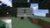

Forsen Speedrun Tracker

v1.1
Data fixed, strongholds added!
Split Odds
S2 Enters
Chance of S2 Enter/Day
Blinds
Chance of Blind/Day
Strongholds
Chance of SH./Day
Calculator
Chance of
Struct 2
Blind
Stronghold
End
before
in under
:
Average Splits per Day
Splits by Run #
Show Only Nether Entries